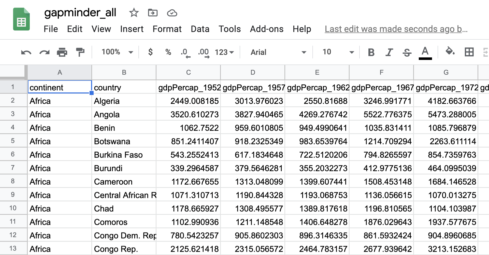

Introduction to Data¶
Today our goals are to understand how we can load and explore data in three different formats – Google Sheets, SPSS, and Python. In addition to being able to load data using these sources we will explore datatypes and begin exploring different data sources. By the end of this lesson students should be able to:
Load and interact with
.csvfiles using google sheets, spss, and pythonDetermine and describe data types
Determine and describe missing data
Data and Data Files¶
To start, we will practice opening data with google drive. First, we want to open a dataset from the Gapminder organization here. You should see something like the screen below when you open the file:

QUESTIONS
What information is contained in the dataset?
What does each row represent?
What do the columns represent?
Are there different kinds of data? Explain.
Where is the country Chad located in the data?
Where is the information on GDP in the year 2002?
What is one question you could answer using this data?
Data and Data Types
Now let’s examine a dataset dealing with drinking around the world here.
Identify the data type of each column:
Object or Category
Integer or Count
Float or Continuous
What is one question you could answer using this data?
What is the fastest way to find the USA data?
Can you limit the data to only EU countries?
What country drinks the most wine?